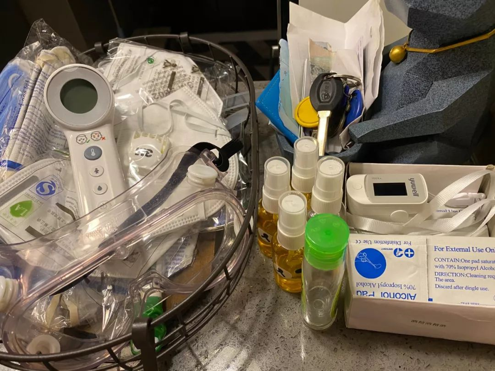

床位的抉择：武汉肿瘤患者求医之困
原文链接 备份链接 疫情严峻，武汉仍在不断征集新冠肺炎床位。重压之下，各家医院肿瘤科「只出难进」，有患者被迫出院，通过网络发帖求助；也有患者试图寻求省外求医路，却被两边「入院接收单」与「通行证」夹在中间，难寻答案。 —— 同一个家庭里的新 …

你印象中的武汉是什么样的？
这座位于华中地区的省会城市充满着生命力，夏天够热，热干面是他们最常见的美食，闲下来的老人们会聚在街头巷尾打牌，春节是他们最热闹的节日，有归乡的年轻人，有早早就置办年货的老人，有火红的对联和热情的拜年。
2020 年春天，武汉人的春节是灰色的。新冠病毒的肆虐把他们原本的闲逸生活摔在地上打了个粉碎。我们努力地找到了几个武汉人，他们跟我们讲述了他们从疫情开始至今的生活变化。他们是幸运儿，毕竟身处这座城市之中，「生死之外，皆是小事」。
接受我们采访的三个人截至目前都没有成为这次新冠病毒的携带者，他们幸运地以各种各样的方式逃过了这一劫。他们当中有孕晚期的准妈妈，有不得不被隔离在工作城市一个人过节的武汉女孩，有回到老家便不得不隔离的北漂男孩。他们见证了这一个月的城市变化，我们记录下他们的故事，也带大家看看一个武汉普通人在这个一波三折的春节里的不平凡生活。三个人都与我们说过同样的话：「2020 年的春节，我可能一辈子都忘不掉。」

一个武汉准妈妈的春节生活
杨卷花yuki
女
武汉媳妇，未感染
29 岁
微博 kol
长居武汉，个人收入不详
自从肺炎传播开始，博主卷花就没有再发出任何一条关于自己最擅长的美妆内容。她在微博每天发布的都是最及时的疫情资讯，有的是武汉人的求助，有的是需要被更多人看到和支持的舆论。
卷花有地道的东北女孩的长相，漂亮，直爽，笑起来甜甜的，语速很快。微博上，这个好看的姑娘有 153 万粉丝，她最近的一条消息是在跟更多武汉人一起呼吁社会考虑延迟开工时间。
「拿我们家来说吧，我老公就是普通的公司员工，每天工作时间规律。假如现在开工，街上又禁止与防疫工作无关的机动车上路，违者罚款 2000 块、扣 12 分。上班族基本只能选择步行去公司，耽误时间不说，还不得不接触更多人，这是很危险的事。他不愿意跟我说这些，怕我担心，但我怎么可能不担心？好在现在开工计划延迟了，不然我可能会更焦虑。」
跟他丈夫有一样的顾虑，我也不敢跟卷花聊太多可能波动她情绪的事，30 岁的她是一位准妈妈，预产期在 3 月 13 日，距现在满打满算也只有二十几天。
如果不是因为这次的突发情况，此时这个小家庭应该正在满心期待地等着迎接一个新生命的到来。卷花 2013 年从吉林来到武汉，与丈夫相恋多年，2016 年深秋二人喜结连理，丈夫是武汉企事业单位的员工，她则专心做自己的时尚博主，两个人收入不多但稳定。这个春天，他们即将迎来自己的第一个孩子。

即将做妈妈的卷花特地留下了一组孕妇照做纪念
因为已经处在孕晚期阶段，卷花格外注意自己的健康问题。早在疫情发作之前，卷花也习惯戴上口罩出门：「我可能是今年武汉最早戴口罩的一批人，当时是因为身体敏感，生怕周围人传染我感冒，没想太多。」
12 月 30 日，被叫做「吹哨人」的已故医生李文亮的一张提醒大家注意传染性肺炎的截屏被发在卷花的家庭微信群，当时她已怀孕 7 个月。出于谨慎，她取消了当天原本和朋友计划的跨年活动。
几天之后，官方爆出截图上的内容是一则「假新闻」，新闻里说：涉嫌「造谣」的 8 个人已被拘捕，病人为患上「普通肺炎」入院治疗的患者，「没有出现人传人的现象」。卷花长出一口气，还在 31 日的上午开车去了医院，完成了又一次产检。
2019 年夏天，得知自己怀孕后，心情紧张又喜悦的卷花被接到了婆婆家住，家里人悉心照顾她的日常饮食起居，也方便丈夫在外安心工作。2020 年农历春节前，婆婆突然毫无征兆地患上了感冒，咳嗽，有点发烧。加上当时已经有肺炎传染性严重的说法被陆续爆出，家里人商量再三，为了保险起见，最终决定让卷花和丈夫搬回他们自己的房子居住。
一天后，武汉宣布封城，各个小区也完全封闭化管理。卷花和丈夫再没去过婆婆家。

因为肺炎肆虐，卷花家一进门的桌上摆放的不再只有门禁和车钥匙，而是种类繁多的防护用品
婆婆家距离华南海鲜市场只有一公里，属于重点监控区域，老人又在这个时间患上肺炎，这让小两口非常紧张。虽然家人生怕传染孕妇才执意让两人搬回家住，但看得出，丈夫还是非常忧心母亲的这次感冒。「当时我比照着网上说的症状看我婆婆的状态，怎么看怎么像，全家人都吓坏了。1 月 21 日，我公公带她去医院，那时候正是疫情刚开始爆发那几天，医院人特别多。你算算，1 月 21 晚上 7 点左右他们从家里出发，家到医院也就是几分钟的车程，1 月 22 中午 11 点半他们才结束所有的检查，一晚上都在医院排队，拍了 CT，也验了血，医生诊断说只是普通的病毒性肺炎，让他们回家自己观察。好在后来她也渐渐地恢复了正常，不知道是自愈了还是真的只是一次普通肺炎。我是在婆婆去医院的时候才跟老公回了自己家住，当时说这病的潜伏期在 14 天左右，那时候我只能默默祈祷婆婆不要真的倒下，以及我不会被作为密切接触者感染。一旦真的有一个人感染，我们这家人也就都完了。」
另一边，武汉本地人不断在各自的朋友圈里发布救助消息，为自己，为家人，也为认识的人。卷花丈夫在手机里刷到自己几天前刚做母亲的高中同学，却经历了丧父之痛，母亲如今也染病正在求助。在等来医院的救助之前，他们自己支付酒店费用，把老人隔离在家附近的一家酒店。「那几天朋友圈里这样的消息太多了，你就感觉自己熟悉的人在纷纷倒下。我当时每天都在哭，觉得自己就要崩溃了。不止是我，所有武汉人都需要一次救赎。」

卷花丈夫的高中同学在短短几天内经历了得子和丧父以及母亲重病的多重情感波折
新冠肺炎彻底打破了卷花和家人原本已经安排妥当的生产计划。「我在怀孕初期就预定好了医院，就是李文亮医生生前所在的武汉市中心医院后湖院区，距离我家最近，有应急情况也方便处理。我之前的几次产检也都是在那儿做的，我这人心细，早就把后面几次检查的号都提前用手机挂好了，现在也泡汤了，哪敢再去公立医院啊？一怕传染二也怕给人家添麻烦，还得重新找别的医院生孩子。」
大年初一的下午，卷花和丈夫一起冒着危险，挤进一家私立医院，预约了 3 月的分娩床位和生产前的最后几次产检。
「现在武汉禁止机动车出行，也不知道接下来几次产检我要怎么去才合适。以及出现早产等临时情况要如何用最快办法赶到医院。」
卷花告诉我，让她心理压力最大的时刻其实已经过去。「我最焦虑的时候是在我婆婆生病，疑似患上肺炎，我和老公又没法去看她，加上城里的交通完全瘫痪的时候。我们好像跟所有人都联系不上，朋友圈里看到很多认识的人倒下，没人知道第二天醒来等到的是好消息还是坏消息。」那时候的她经常一个人躲在洗手间里哭，又不得不控制自己不敢太悲伤，生怕影响孩子：「我就觉得都怪我倒霉，怎么就让孩子这时候出生。真的要是出了点什么意外要我怎么办？孩子要被传染了怎么办我都想过了，我倒霉也就算了，就是觉得对不起那么小的孩子。」
好在身边人及时给了她一些良性的疏导，卷花的状态逐渐恢复平静。「我庆幸双十一和双十二的时候赶上打折，囤了很多婴儿用品，尿布或者奶粉都囤了不少，现在即便一时半会出不了门也不会太担心。相熟的朋友还给我们寄来了一些口罩和消毒液，也算是解了燃眉之急。」
小区封闭至今，她基本上只待在家里，丈夫有时会出门买菜，后来有小区的菜站供给，再后来出门的情况越来越艰难，他们干脆跟大多数年轻人一样，开始用手机软件在网上抢菜。

2 月 5 日上午的武汉超市里，所有水产品已被囤货以减少出门的市民抢购一空
「之前医生还是建议我在孕晚期做简单的运动，说是这样保持四肢的活力有利于生产。现在出门显然是不可能了，我能做的是在家做些菜来解决我俩的一日三餐。」在病症肆虐之前，卷花和丈夫和大多数年轻人一样，靠点外卖来解决一日三餐，如今他们也开始学着给自己做起了厨师：「都是照着网上的方法做的。第一可以当做简单的运动，第二吃起来比较安心，这也是没有办法的办法。」
上周卷花又接了一通让她崩溃的电话，生产后她可能无办法如期住进月子中心。「这家月子中心是我在去年 10 月份就定好了的，准备从生产的医院出来就直接住进去。现在他们突然给我打电话说他们医院被临时用来给武汉的医护人员做宿舍了，估计 3 月份住进来有困难，建议我早点做好其他打算。」
事出突然，又迫近产期。卷花和家人还没想好如何应对：「实在不行只能请个月嫂来家里，只是这时候还不知道有没有人愿意来做，只能走一步看一步了。」电话那端的她叹了口气，「还要尽量开心一点，我要笑着见到我的孩子。」

C O N T R I B U T O R S
（图片均为受访者个人提供）
编辑：暖小团
撰文：Apollo
责编：Neil
执行：本本

暑期档大热预警！导演是那位美学十级强迫症
韦斯·安德森，看他的电影得论「帧」。
这四个男人治好了我的假期缺爱症
宅在家的一个月，还好有他们。
__________________


**给我好看！ **
**
原文链接 备份链接 疫情严峻，武汉仍在不断征集新冠肺炎床位。重压之下，各家医院肿瘤科「只出难进」，有患者被迫出院，通过网络发帖求助；也有患者试图寻求省外求医路，却被两边「入院接收单」与「通行证」夹在中间，难寻答案。 —— 同一个家庭里的新 …
原文链接 备份链接 1月25日，是中国鼠年的第一天，也是武汉封城的第3天。非常时期，武汉成了全国人民挂念、祈福的城市。封城后，武汉人民的真实生活是什么样？正和岛自今日起特别推出《叶青：我在武汉疫区的第N天》专栏。叶青是一位定居武汉40年的 …
原文链接 备份链接 作 者：叶青 中南财经政法大学教授、博导 湖北省统计局副局长 正和岛蓝色岛邻 来 源：正和岛（ID：zhenghedao） 我算是外来的武汉人。 1979年10月从老家福建建阳到湖北财经学院（即现在的中南财经政法大学） …
原文链接 备份链接 3月21日。 封城第59天。这么长时间了！ 昨天那么大的太阳，今天突然就阴了。下午还下了点雨。这时节的春雨，对于院子里的树以及花，都还是很需要的。前两三天，武大樱花盛开，树下空荡无人，估计是记者拍了一些照片，同学群里便 …
原文链接 备份链接 研究者正试图揭示新冠病毒的致病性、致死性机制，为临床治疗提供新依据，阶段结果是新冠病毒的致病特征与SARS相似，而进一步的结果或将由解剖揭开 2020年2月初，武汉金银潭医院隔离病区内，医护人员正在给新冠肺炎患者做治 …